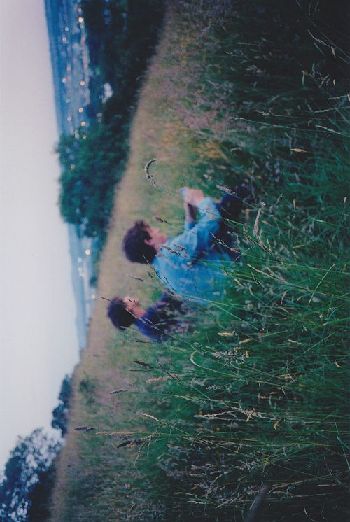
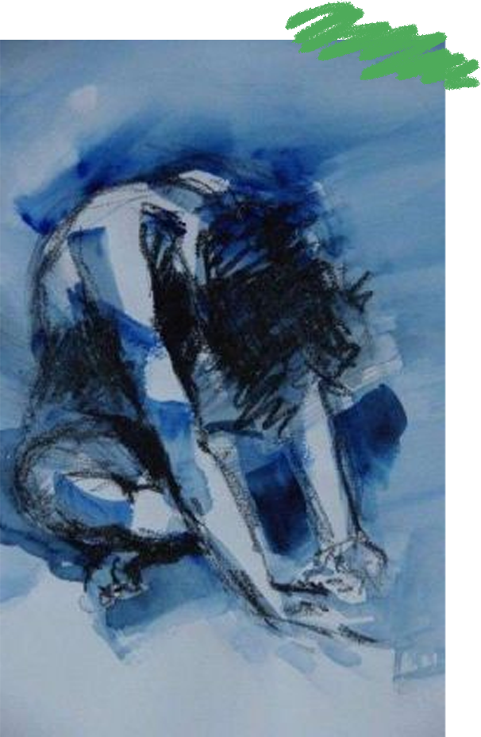
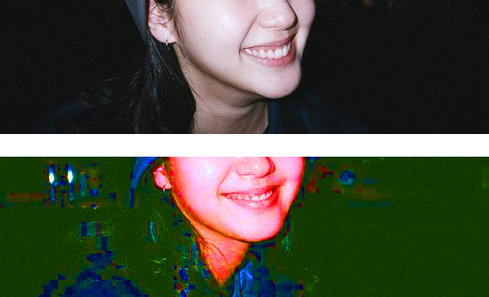
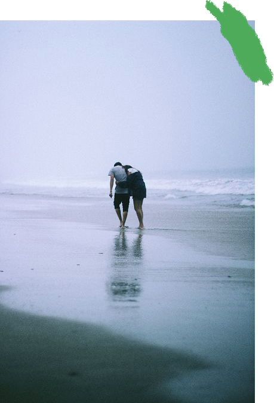
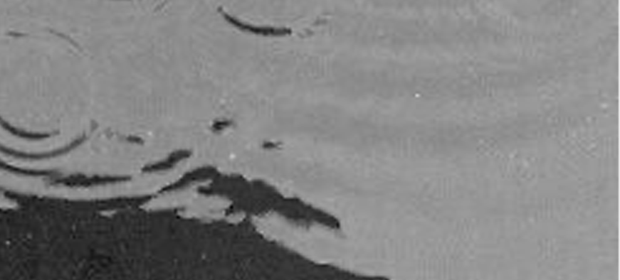
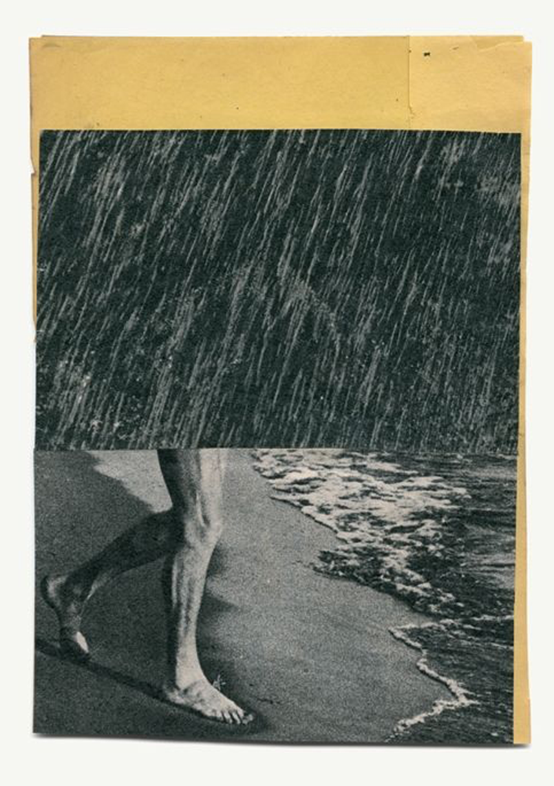
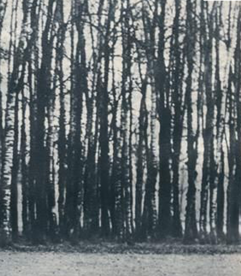

사랑에대하여
시대가 말하는
사랑이란
가사집
사랑들은
무엇인가?


돌아서 눈감으면 잊을까
정든님 떠나가면 어이해
바람결에 부딪히는 사랑의
두눈에 맺혀지는 눈물이여
이제와 생각하면 당신은
내마음 깊은 곳에 찾아와
사랑은 기쁨보다 아픔인 것을
나에게 심어주었죠
<사랑했어요>
1984, 김현식

탁자위에 놓인 너의 사진을 보며
슬픈 목소리로 불러보지만
아무말도 없는 그대 나만을 바라보며
변함없는 미소를 주네
내가 아는 사랑은
그댈 위한 나의 마음
그리고 그대의 미소
<미소속에 비친 그대>
1991, 신승훈

많이 아팠었어
긴 호흡에도 가라앉지 않아
지독한 그리움을 앓게 한
날 울린 사랑 너였어
가끔씩 만났지 서로가 다른 연인에게
묶여있는 지금도
마음 속에는 너를 인정하는 나
네 앞에 서면 또 울어
한 번 파놓았던 아픈 사랑은
갈수록 더 깊어지는 것
<와인>
2000, 김경호

이해해 볼께 혼자 남겨진 이유
이젠 나의 눈물 닦아줄
너는 없기에 지금 나의
곁에 있는 건 그림자 뿐임을
난 알기에
사랑은 봄비처럼 내 마음 적시고
지울 수 없는 추억을 내게 남기고
이제 잊으라는 그 한마디로
나와 상관없는 다른 꿈을 꾸고
<사랑은 봄비처럼… 이별은 겨울비처럼>
2003, 임현정
이럴 거면 날 흔들어 놓지 말지
이럴 거면 잘해주지나 말지
이럴 거면 첨 스쳐가게 놔두지
너를 모르는 채 살게 하지 떠날 거라면
원망해도 후회해도 널 향한 나의
사랑은 이미 엎질러진 물 처럼
주워 담을 수 없어
<이럴거면>
2007, 아이비

우산도 없이 감기걸릴것만 같아
이 길이 너에게로 돌아갈 수
있는 길이면 젖어도 좋은데
사랑이 참 모자라구나
사랑은 저 빗방울처럼
모두 까맣게 잊어버리고
젖어 버리고선 아파하는
감기같은 걸까요

<Rain drop>
2010, 아이유

사랑한단 말로는
사랑할 순 없군요
그대 상처 주네요
나의 뻔한 그 말이
너무 쉽게 뱉은 말
너무 쉬운 사랑은
다 거짓말이죠
그래 다 거짓말이죠
무엇을 원하는지
얼마나 힘든 건지
신경 쓰지 않죠
<정말로 사랑한다면>
2012, 버스커버스커
좋았던 기억만
그리운 마음만
니가 떠나간 그 길 위에
이렇게 남아 서 있다
잊혀질 만큼만
괜찮을 만큼만
눈물 머금고 기다린 떨림 끝에
다시 나를 피우리라
사랑은 피고 또 지는 타버리는 불꽃
빗물에 젖을까 두 눈을 감는다
<야생화>
2014, 박효신
오 오 지겨워서 싫어
요즘 여기저기서 난리
트롯 너는 내 스타일 아냐
나는 팝송과 샹송과 최신 가요
근데 요즘 내가 점점 이상해
길 가다 흐르는 찰진 멜로디
가슴이 터지게 불러본다
사랑은 얄미운 나비인가 봐
<나는 트로트가 싫어요>
2021, 임창정